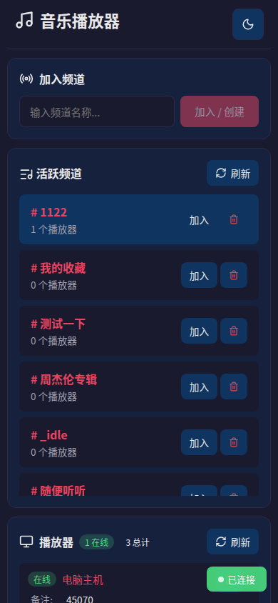
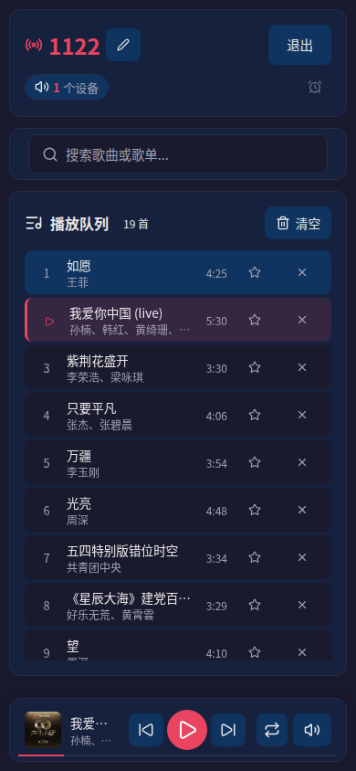
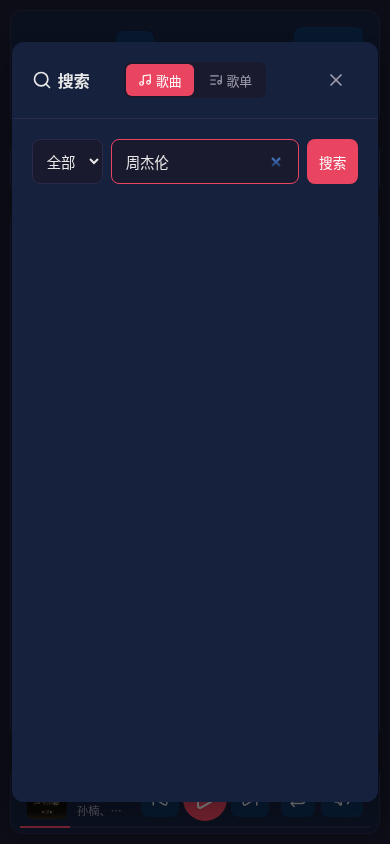
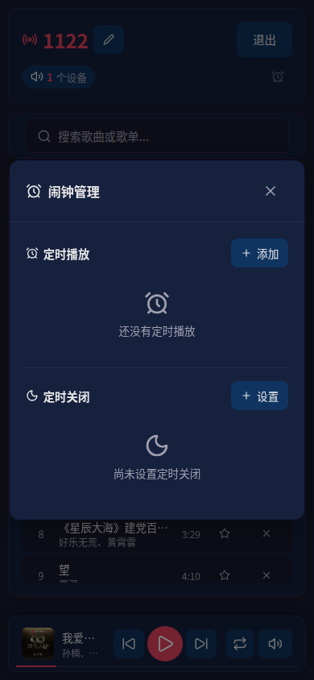
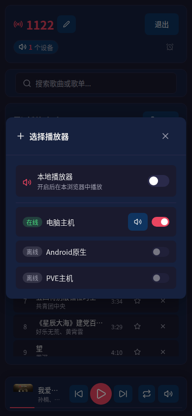
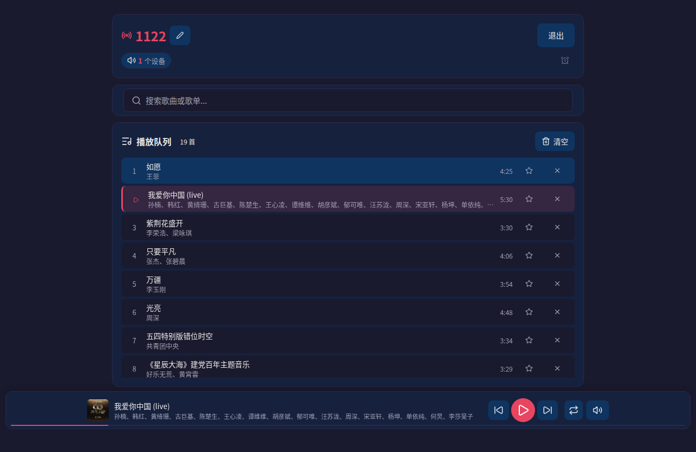

从频道管理到闹钟定时，打造全能的分布式音乐控制体验。
控制页面与播放器完全解耦，通过 Go 后端 WebSocket 调度。一个控制页面可同时指挥多个播放器。
频道是播放器逻辑集合。创建频道、分配播放器、独立队列。同一频道内的所有播放器同步接收指令。
Redis 持久化队列，支持添加、删除、拖拽排序、清空。实时推送队列变更到控制端和播放器。
接入第三方音乐服务 API，搜索歌曲、歌单，获取播放链接和歌词。预留接口适配层，可切换数据源。
频道级闹钟系统：渐入渐出、冲突策略、指定歌曲播放。睡眠定时自动暂停/停止，闭环体验。
播放/暂停、上一曲/下一曲、进度拖拽、音量调节（统一或单独）。实时状态同步，所见即所得。
全栈 Go + Vue 3 + Redis + SQLite，Docker Compose 一键拉起。
HTTP + WebSocket 服务
业务核心 · 指令调度
响应式控制页面
TypeScript · Vite 构建
播放队列（Redis）
播放器信息（SQLite）
api / redis / vue
三服务一键部署
多端一致体验，从频道管理到播放控制一应俱全。





